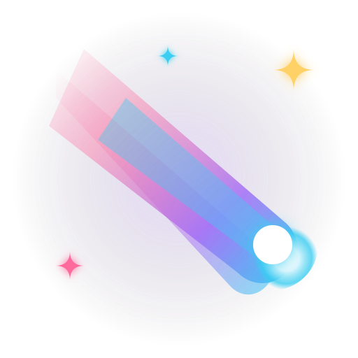

StelLaneFan Game GitHubStelLane: Your way is our way. 🌠
StelLane은 스텔라이브(StelLive) 크리에이터들의 명곡을 다이내믹하게 즐길 수 있는 Kotlin/JVM 기반 오픈소스 리듬 게임입니다. GLFW/OpenGL을 이용한 고성능 렌더링 엔진과 VLC 미디어 플레이어를 백그라운드로 융합하여 환상적인 플레이 경험을 제공합니다.
현대적인 언어 Kotlin과 경량 그래픽 라이브러리인 GLFW/OpenGL(LWJGL)을 조합하여, 프레임 레이트 안정성과 미세한 레이턴시 입력을 완벽하게 관리합니다.
VLC 미디어 플레이어 런타임을 연동하여 게임 플레이 백그라운드에서 고화질 오피셜 뮤직비디오(MV) 영상을 프레임 저하 없이 재생할 수 있습니다.
곡의 BPM과 타임라인에 맞춰 퀀타이즈, 노트 배치, 판정 영역 조정 등 리듬 게임 전반의 설정을 실시간으로 조율할 수 있는 차트 에디터를 장착하고 있습니다.
사용자 메인 메뉴 인터페이스, 곡 선택 창, 리듬 플레이 필드, 그리고 핵심 게임 설정 화면을 탑재하고 있는 진입점입니다.
노트와 채보 데이터(Song / Chart / Note), 판정 알고리즘(Perfect / Good / Miss) 및 채보 JSON 파서와 비즈니스 로직을 다룹니다.
GLFW 게임 루프, 입력 이벤트 디스패처, VLCJ 비디오 스레드 렌더링 등 하드웨어 연동 중심의 백엔드입니다.
타임라인 그리드 뷰, 퀀타이즈 계산, 노트 배치 정렬 등 채보를 창작하는 에디터 기능의 연산 백엔드입니다.